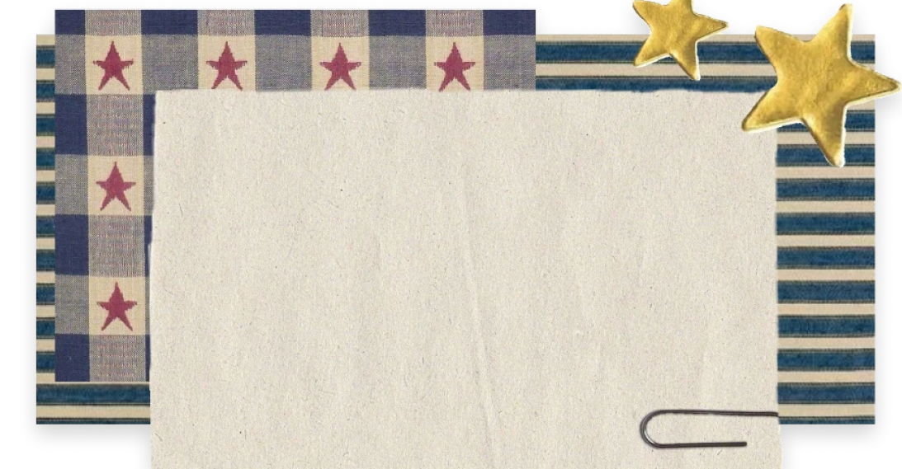
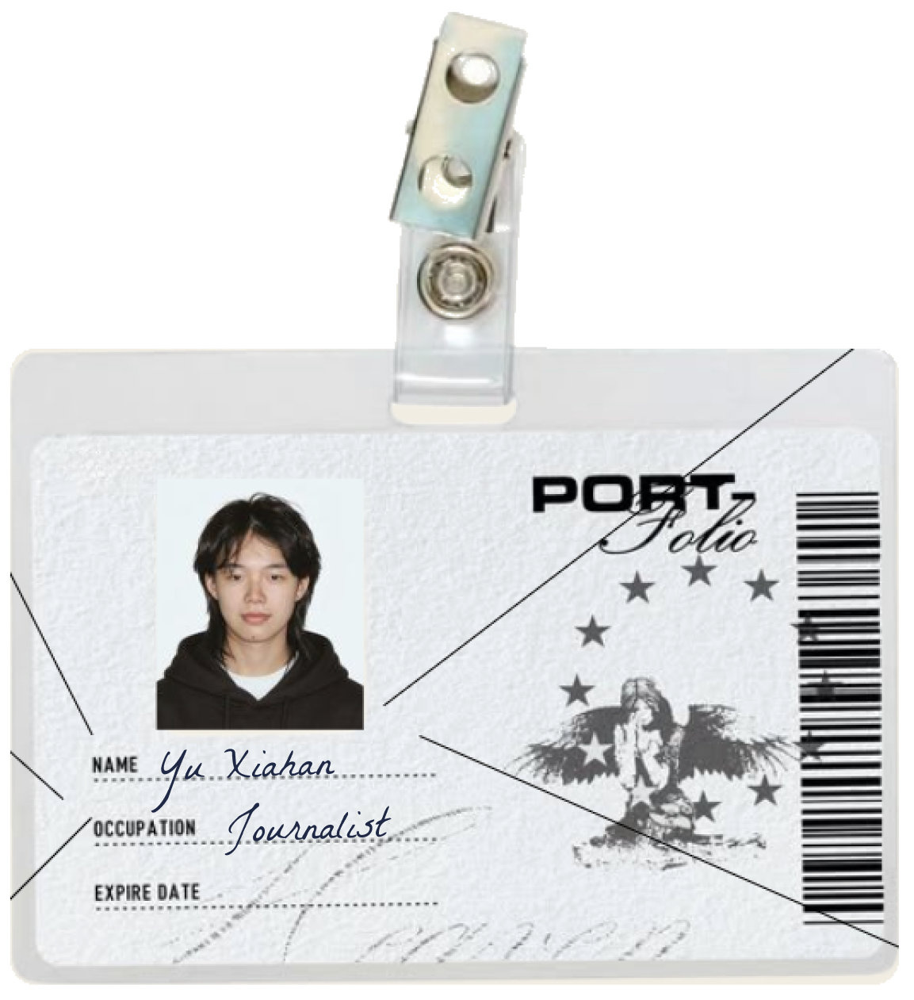
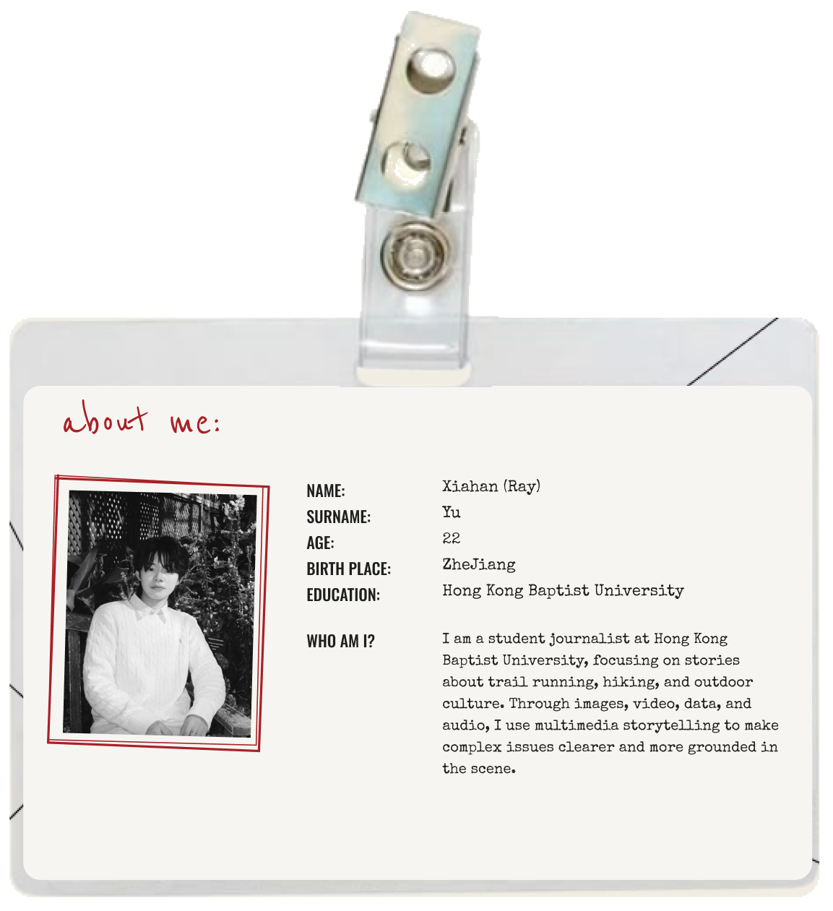
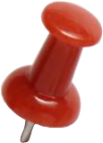

About me



click the badge to flip it
My name is Yu Xiahan, BTW You can call me
Ray
I'm a student journalist at Hong
Kong Baptist University
My major is
data journalism
What I do:
• Written Reporting
• Video Storytelling
• Podcast / Audio
• News Website Design & Development
• Standuper
• Photo Stories
Skills
• Figma, Canva, CapCut
• Tableau, Flourish
• Python, HTML, CSS
• Ai, PS, AU, PR
Focus
• Outdoor & Trail Running
• Hiking & Nature
• Hong Kong Urban Life
• Data & Society
